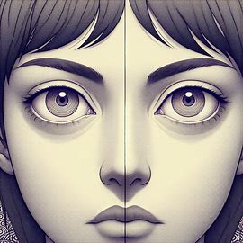
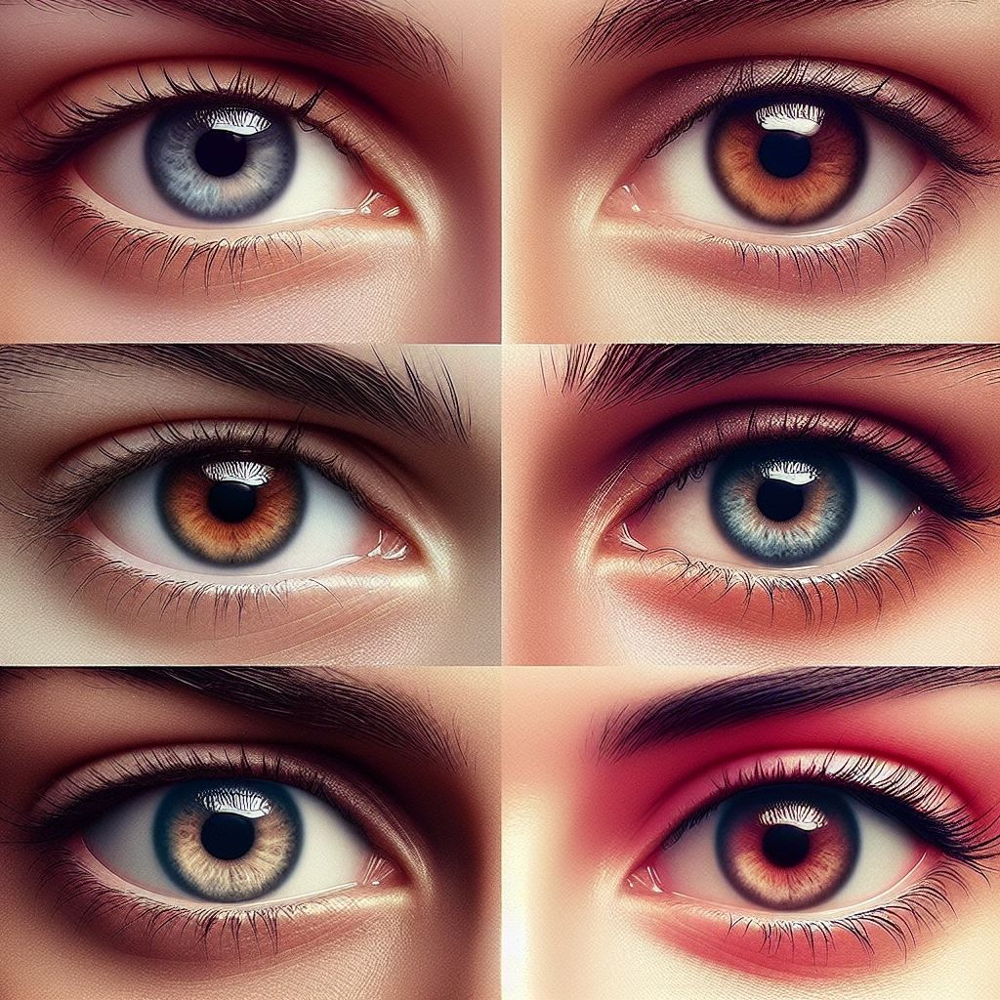

Después de absorber toda la sabiduría, llega el momento de
aplicarla con la velocidad y diversión de una montaña rusa, llevando nuestras
experiencias a nuevas alturas.
Contacto visual
El contacto visual es el puente que conecta a dos personas en
una conversación, creando un lazo de comprensión y empatía.

¿Qué es?
Comunicación no verbal que ocurre cuando dos personas fijan
sus miradas en los ojos del otro. A través del contacto visual, podemos interpretar
las emociones ajenas y transmitir las nuestras.
características: + Facilita la interacción entre el emisor y el receptor. + Sirve como señal para iniciar una comunicación. + Ayuda a establecer y respetar los turnos de palabra. + Atención e interés.

Importancia
El contacto visual es fundamental en la comunicación
interpersonal, ya que facilita la interacción entre el emisor y el receptor,
permitiendo una escucha activa y la expresión de emociones.
Alexis-Valentina. (2024). Exposición 4:Contacto visual. Nezahualcóyotl: Clase de Expresión Oral y Escrita II.
Martínez, P. (25 de Noviembre de 2019). El contacto visual en psicología: tipos y significado. Obtenido de psicologia-online.com: https://www.psicologia-online.com/el-contacto-visual-en-psicologia-tipos-y-significado-4808.html